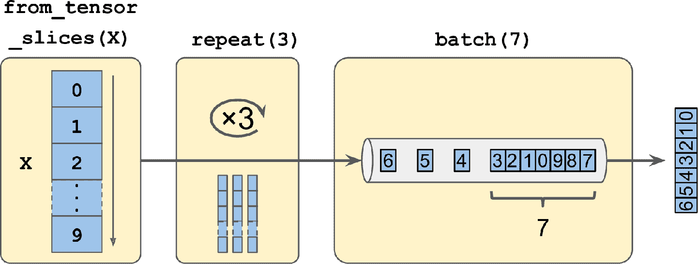
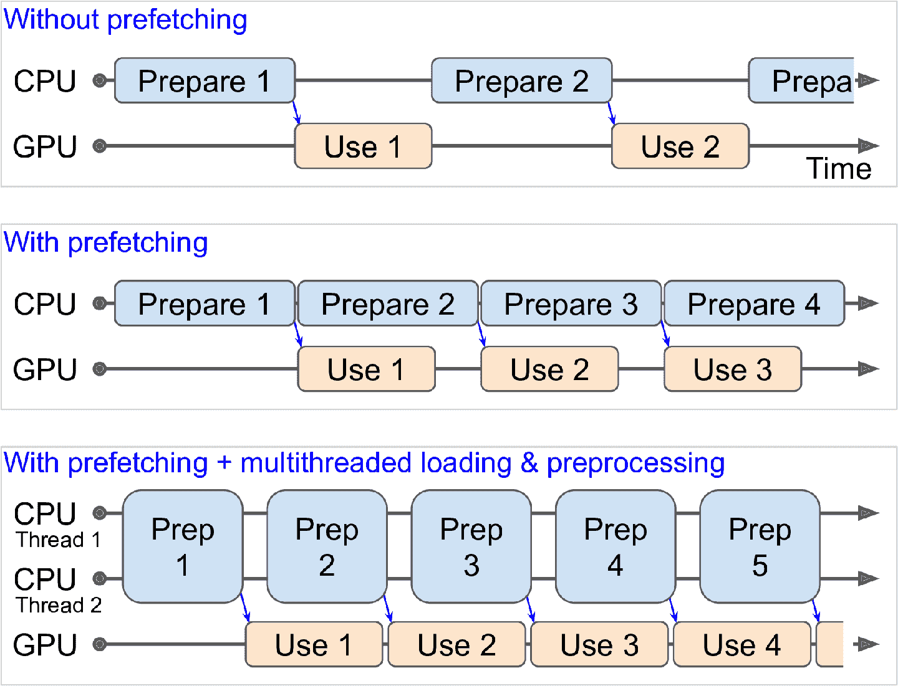
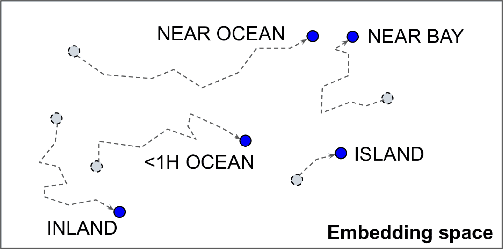
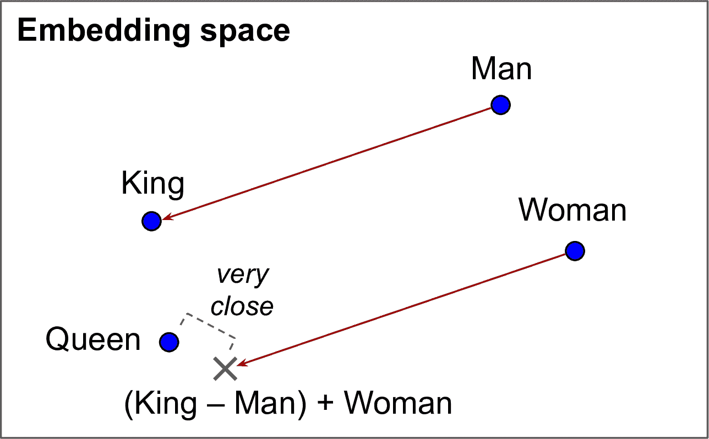

、 、
译者
@SeanCheney ：
目前为止tf.keras可以无缝配合
Data API 还可以从现成的文件
高效读取大数据集不是唯一的难点
本章中
-
TF Transform (
tf.Transform)： ， ， ， ， 。 ， 。 -
TF Datasets (TFDS)
。 ， ， （ ） 。
Data API
整个 Data API 都是围绕数据集dataset的概念展开的tf.data.Dataset.from_tensor_slices()创建一个存储于内存中的数据集
>>> X = tf.range(10) # any data tensor
>>> dataset = tf.data.Dataset.from_tensor_slices(X)
>>> dataset
<TensorSliceDataset shapes: (), types: tf.int32>
函数from_tensor_slices()取出一个张量tf.data.DatasetX的全部切片tf.data.Dataset.range(10)也能达到同样的效果
可以像下面这样对这个数据集迭代
>>> for item in dataset:
... print(item)
...
tf.Tensor(0, shape=(), dtype=int32)
tf.Tensor(1, shape=(), dtype=int32)
tf.Tensor(2, shape=(), dtype=int32)
[...]
tf.Tensor(9, shape=(), dtype=int32)
链式转换
有了数据集之后
>>> dataset = dataset.repeat(3).batch(7)
>>> for item in dataset:
... print(item)
...
tf.Tensor([0 1 2 3 4 5 6], shape=(7,), dtype=int32)
tf.Tensor([7 8 9 0 1 2 3], shape=(7,), dtype=int32)
tf.Tensor([4 5 6 7 8 9 0], shape=(7,), dtype=int32)
tf.Tensor([1 2 3 4 5 6 7], shape=(7,), dtype=int32)
tf.Tensor([8 9], shape=(2,), dtype=int32)

图 13-1 链接数据集转换
在这个例子中repeat()方法batch()方法drop_remainder=True
警告
数据集方法不修改数据集 ： 只是生成新的数据集而已 ， 所以要做新数据集的赋值 ， 即使用 （ dataset = ...） 。
还可以通过map()方法转换元素
>>> dataset = dataset.map(lambda x: x * 2) # Items: [0,2,4,6,8,10,12]
这个函数可以用来对数据做预处理num_parallel_calls就行map()方法的函数必须是可以转换为 TF 函数
map()方法是对每个元素做转换的apply()方法是对数据整体做转换的unbatch()函数
>>> dataset = dataset.apply(tf.data.experimental.unbatch()) # Items: 0,2,4,...
还可以用filter()方法做过滤
>>> dataset = dataset.filter(lambda x: x < 10) # Items: 0 2 4 6 8 0 2 4 6...
take()方法可以用来查看数据
>>> for item in dataset.take(3):
... print(item)
...
tf.Tensor(0, shape=(), dtype=int64)
tf.Tensor(2, shape=(), dtype=int64)
tf.Tensor(4, shape=(), dtype=int64)
打散数据
当训练集中的实例是独立同分布时shuffle()方法
>>> dataset = tf.data.Dataset.range(10).repeat(3) # 0 to 9, three times
>>> dataset = dataset.shuffle(buffer_size=5, seed=42).batch(7)
>>> for item in dataset:
... print(item)
...
tf.Tensor([0 2 3 6 7 9 4], shape=(7,), dtype=int64)
tf.Tensor([5 0 1 1 8 6 5], shape=(7,), dtype=int64)
tf.Tensor([4 8 7 1 2 3 0], shape=(7,), dtype=int64)
tf.Tensor([5 4 2 7 8 9 9], shape=(7,), dtype=int64)
tf.Tensor([3 6], shape=(2,), dtype=int64)
提示
如果在随机数据集上调用 ： repeat()方法默认下 ， 每次迭代的顺序都是新的 ， 通常这样没有问题 。 但如果你想让每次迭代的顺序一样 ， 比如 （ 测试或调试 ， ） 可以设置 ， reshuffle_each_iteration=False。
对于内存放不下的大数据集shuf命令打散文本文件shuffle()加一个随机缓存
多行数据交叉
首先
MedInc,HouseAge,AveRooms,AveBedrms,Popul,AveOccup,Lat,Long,MedianHouseValue
3.5214,15.0,3.0499,1.1065,1447.0,1.6059,37.63,-122.43,1.442
5.3275,5.0,6.4900,0.9910,3464.0,3.4433,33.69,-117.39,1.687
3.1,29.0,7.5423,1.5915,1328.0,2.2508,38.44,-122.98,1.621
[...]
再假设train_filepaths包括了训练文件路径的列表valid_filepaths和test_filepaths
>>> train_filepaths
['datasets/housing/my_train_00.csv', 'datasets/housing/my_train_01.csv',...]
另外train_filepaths = "datasets/housing/my_train_*.csv"
filepath_dataset = tf.data.Dataset.list_files(train_filepaths, seed=42)
默认list_files()函数返回一个文件路径打散的数据集shuffle=False
然后leave()方法skip()方法
n_readers = 5
dataset = filepath_dataset.interleave(
lambda filepath: tf.data.TextLineDataset(filepath).skip(1),
cycle_length=n_readers)
interleave()方法会创建一个数据集filepath_dataset读 5 条文件路径TextLineDatasetTextLineDatasets数据集TextLineDatasetsfilepath_dataset再获取五个文件路径
提示
为了交叉得更好 ： 最好让文件有相同的长度 ， 否则长文件的尾部不会交叉 ， 。
默认情况下interleave()不是并行的num_parallel_calls为想要的线程数map()方法也有这个参数tf.data.experimental.AUTOTUNE
>>> for line in dataset.take(5):
... print(line.numpy())
...
b'4.2083,44.0,5.3232,0.9171,846.0,2.3370,37.47,-122.2,2.782'
b'4.1812,52.0,5.7013,0.9965,692.0,2.4027,33.73,-118.31,3.215'
b'3.6875,44.0,4.5244,0.9930,457.0,3.1958,34.04,-118.15,1.625'
b'3.3456,37.0,4.5140,0.9084,458.0,3.2253,36.67,-121.7,2.526'
b'3.5214,15.0,3.0499,1.1065,1447.0,1.6059,37.63,-122.43,1.442'
忽略表头行
预处理数据
实现一个小函数来做预处理
X_mean, X_std = [...] # mean and scale of each feature in the training set
n_inputs = 8
def preprocess(line):
defs = [0.] * n_inputs + [tf.constant([], dtype=tf.float32)]
fields = tf.io.decode_csv(line, record_defaults=defs)
x = tf.stack(fields[:-1])
y = tf.stack(fields[-1:])
return (x - X_mean) / X_std, y
逐行看下代码
-
首先
， 。 X_mean和X_std是 1D 张量（ ） ， ， 。 -
preprocess()函数从 csv 取一行， 。 tf.io.decode_csv()函数， ， ， ， 。 ， 。 ， ， ， ， tf.float32的空数组， （ ） ： ， ， 。 -
decode_csv()函数返回一个标量张量（ ） ， 。 tf.stack()， 。 （ ， ） 。 -
最后
， ， ， ， 。
测试这个预处理函数
>>> preprocess(b'4.2083,44.0,5.3232,0.9171,846.0,2.3370,37.47,-122.2,2.782')
(<tf.Tensor: id=6227, shape=(8,), dtype=float32, numpy=
array([ 0.16579159, 1.216324 , -0.05204564, -0.39215982, -0.5277444 ,
-0.2633488 , 0.8543046 , -1.3072058 ], dtype=float32)>,
<tf.Tensor: [...], numpy=array([2.782], dtype=float32)>)
很好
整合
为了让代码可复用
def csv_reader_dataset(filepaths, repeat=1, n_readers=5,
n_read_threads=None, shuffle_buffer_size=10000,
n_parse_threads=5, batch_size=32):
dataset = tf.data.Dataset.list_files(filepaths)
dataset = dataset.interleave(
lambda filepath: tf.data.TextLineDataset(filepath).skip(1),
cycle_length=n_readers, num_parallel_calls=n_read_threads)
dataset = dataset.map(preprocess, num_parallel_calls=n_parse_threads)
dataset = dataset.shuffle(shuffle_buffer_size).repeat(repeat)
return dataset.batch(batch_size).prefetch(1)
代码条理很清晰prefetch(1)
预提取
通过调用prefetch(1)interleave()和map()的num_parallel_calls

图 13-3 通过预提取
提示
如果想买一块 GPU 显卡的话 ： 它的处理能力和显存都是非常重要的 ， 另一个同样重要的 。 是显存带宽 ， 即每秒可以进入或流出内存的 GB 数 ， 。
如果数据集不大cache()方法将数据集存入内存
你现在知道如何搭建高效输入管道concatenate()zip()window()reduce()shard()flat_map()padded_batch()from_generator()和from_tensors()tf.data.experimental中还有试验性功能
tf.keras使用数据集
现在可以使用csv_reader_dataset()函数为训练集创建数据集了tf.keras会做重复
train_set = csv_reader_dataset(train_filepaths)
valid_set = csv_reader_dataset(valid_filepaths)
test_set = csv_reader_dataset(test_filepaths)
现在就可以利用这些数据集来搭建和训练 Keras 模型了fit()方法X_trainy_trainX_validy_valid
model = keras.models.Sequential([...])
model.compile([...])
model.fit(train_set, epochs=10, validation_data=valid_set)
相似的evaluate()和predict()方法
model.evaluate(test_set)
new_set = test_set.take(3).map(lambda X, y: X) # pretend we have 3 new instances
model.predict(new_set) # a dataset containing new instances
跟其它集合不同new_set通常不包含标签
如果你想创建自定义训练循环
for X_batch, y_batch in train_set:
[...] # perform one Gradient Descent step
事实上
@tf.function
def train(model, optimizer, loss_fn, n_epochs, [...]):
train_set = csv_reader_dataset(train_filepaths, repeat=n_epochs, [...])
for X_batch, y_batch in train_set:
with tf.GradientTape() as tape:
y_pred = model(X_batch)
main_loss = tf.reduce_mean(loss_fn(y_batch, y_pred))
loss = tf.add_n([main_loss] + model.losses)
grads = tape.gradient(loss, model.trainable_variables)
optimizer.apply_gradients(zip(grads, model.trainable_variables))
祝贺
提示
如果你对 csv 文件感到满意 ： 或其它任意格式 （ ） 就不必使用 TFRecord ， 就像老话说的 。 只要没坏就别修 ， TFRecord 是为解决训练过程中加载和解析数据时碰到的瓶颈 ！ 。
TFRecord 格式
TFRecord 格式是 TensorFlow 偏爱的存储大量数据并高效读取的数据tf.io.TFRecordWriter类轻松创建 TFRecord 文件
with tf.io.TFRecordWriter("my_data.tfrecord") as f:
f.write(b"This is the first record")
f.write(b"And this is the second record")
然后可以使用tf.data.TFRecordDataset来读取一个或多个 TFRecord 文件
filepaths = ["my_data.tfrecord"]
dataset = tf.data.TFRecordDataset(filepaths)
for item in dataset:
print(item)
输出是
tf.Tensor(b'This is the first record', shape=(), dtype=string)
tf.Tensor(b'And this is the second record', shape=(), dtype=string)
提示
默认情况下 ： ， TFRecordDataset会逐一读取数据但通过设定 ， num_parallel_reads可以并行读取并交叉数据另外 。 你可以使用 ， list_files()和interleave()获得同样的结果。
压缩 TFRecord 文件
有的时候压缩 TFRecord 文件很有必要options参数
options = tf.io.TFRecordOptions(compression_type="GZIP")
with tf.io.TFRecordWriter("my_compressed.tfrecord", options) as f:
[...]
当读取压缩 TFRecord 文件时
dataset = tf.data.TFRecordDataset(["my_compressed.tfrecord"],
compression_type="GZIP")
简要介绍协议缓存
即便每条记录可以使用任何二进制格式
syntax = "proto3";
message Person {
string name = 1;
int32 id = 2;
repeated string email = 3;
}
定义写道Person对象可以有一个nameint32的idemail字段.proto文件中有了一个定义protocprotoc了Person缓存协议
>>> from person_pb2 import Person # 引入生成的访问类
>>> person = Person(name="Al", id=123, email=["a@b.com"]) # 创建一个 Person
>>> print(person) # 展示 Person
name: "Al"
id: 123
email: "a@b.com"
>>> person.name # 读取一个字段
"Al"
>>> person.name = "Alice" # 修改一个字段
>>> person.email[0] # 重复的字段可以像数组一样访问
"a@b.com"
>>> person.email.append("c@d.com") # 添加 email 地址
>>> s = person.SerializeToString() # 将对象序列化为字节串
>>> s
b'\n\x05Alice\x10{\x1a\x07a@b.com\x1a\x07c@d.com'
>>> person2 = Person() # 创建一个新 Person
>>> person2.ParseFromString(s) #解析字节串<span class="bd-box"><h-char class="bd bd-end"><h-inner>（</h-inner></h-char></span>字节长度 27<span class="bd-box"><h-char class="bd bd-beg"><h-inner>）</h-inner></h-char></span>
27
>>> person == person2 # 现在相等
True
简而言之protoc生成的类PersonSerializeToString()将其序列化ParseFromString()方法来解析
可以将序列化的Person对象存储为 TFRecord 文件SerializeToString()和ParseFromString()不是 TensorFlow 运算tf.py_function()运算
TensorFlow 协议缓存
TFRecord 文件主要使用的协议缓存是Example
syntax = "proto3";
message BytesList { repeated bytes value = 1; }
message FloatList { repeated float value = 1 [packed = true]; }
message Int64List { repeated int64 value = 1 [packed = true]; }
message Feature {
oneof kind {
BytesList bytes_list = 1;
FloatList float_list = 2;
Int64List int64_list = 3;
}
};
message Features { map<string, Feature> feature = 1; };
message Example { Features features = 1; };
BytesListFloatListInt64List的定义都很清楚[packed = true]Feature包含的是BytesListFloatListInt64List三者之一FeaturessExample值包含一个Features对象tf.train.Example的例子
from tensorflow.train import BytesList, FloatList, Int64List
from tensorflow.train import Feature, Features, Example
person_example = Example(
features=Features(
feature={
"name": Feature(bytes_list=BytesList(value=[b"Alice"])),
"id": Feature(int64_list=Int64List(value=[123])),
"emails": Feature(bytes_list=BytesList(value=[b"a@b.com",
b"c@d.com"]))
}))
这段代码有点冗长和重复Example协议缓存SerializeToString()方法将其序列化
with tf.io.TFRecordWriter("my_contacts.tfrecord") as f:
f.write(person_example.SerializeToString())
通常需要写不止一个ExampleExample协议缓存
有了序列化好的ExampleTFRecord 文件之后
加载和解析 Example
要加载序列化的Example协议缓存tf.data.TFRecordDatasettf.io.parse_single_example()解析每个Exampletf.io.FixedLenFeature描述符"email"特征tf.io.VarLenFeature描述符
下面的代码定义了描述字典TFRecordDatasetExample协议缓存
feature_description = {
"name": tf.io.FixedLenFeature([], tf.string, default_value=""),
"id": tf.io.FixedLenFeature([], tf.int64, default_value=0),
"emails": tf.io.VarLenFeature(tf.string),
}
for serialized_example in tf.data.TFRecordDataset(["my_contacts.tfrecord"]):
parsed_example = tf.io.parse_single_example(serialized_example,
feature_description)
长度固定的特征会像常规张量那样解析tf.sparse.to_dense()将稀疏张量转变为紧密张量
>>> tf.sparse.to_dense(parsed_example["emails"], default_value=b"")
<tf.Tensor: [...] dtype=string, numpy=array([b'a@b.com', b'c@d.com'], [...])>
>>> parsed_example["emails"].values
<tf.Tensor: [...] dtype=string, numpy=array([b'a@b.com', b'c@d.com'], [...])>
BytesList可以包含任意二进制数据tf.io.encode_jpeg()将图片编码为 JPEG 格式BytesListTFRecord时Example开始tf.io.decode_jpeg()解析数据tf.io.decode_image()BMPGIFJPEGPNG格式tf.io.serialize_tensor()序列化张量BytesList特征BytesList中TFRecord时tf.io.parse_tensor()解析数据
除了使用tf.io.parse_single_example()逐一解析Exampletf.io.parse_example()逐批次解析
dataset = tf.data.TFRecordDataset(["my_contacts.tfrecord"]).batch(10)
for serialized_examples in dataset:
parsed_examples = tf.io.parse_example(serialized_examples,
feature_description)
可以看到Example协议缓存对大多数情况就足够了SequenceExample协议缓存就是为了处理这种情况的
使用SequenceExample协议缓存处理嵌套列表
下面是SequenceExample协议缓存的定义
message FeatureList { repeated Feature feature = 1; };
message FeatureLists { map<string, FeatureList> feature_list = 1; };
message SequenceExample {
Features context = 1;
FeatureLists feature_lists = 2;
};
SequenceExample包括一个上下文数据的Features对象FeatureList对象FeatureList命名为"content""comments"FeatureLists对象FeatureList包含Feature对象的列表Feature对象可能是字节串Feature表示的是一个句子或一条评论SequenceExampleExample很像tf.io.parse_single_sequence_example()来解析单个的SequenceExample或用tf.io.parse_sequence_example()解析一个批次tf.RaggedTensor.from_sparse()
parsed_context, parsed_feature_lists = tf.io.parse_single_sequence_example(
serialized_sequence_example, context_feature_descriptions,
sequence_feature_descriptions)
parsed_content = tf.RaggedTensor.from_sparse(parsed_feature_lists["content"])
现在你就知道如何高效存储
预处理输入特征
为神经网络准备数据需要将所有特征转变为数值特征map()方法
例如Lambda层实现标准化层
means = np.mean(X_train, axis=0, keepdims=True)
stds = np.std(X_train, axis=0, keepdims=True)
eps = keras.backend.epsilon()
model = keras.models.Sequential([
keras.layers.Lambda(lambda inputs: (inputs - means) / (stds + eps)),
[...] # 其它层
])
并不难StandardScalermeans和stds这样的全局变量
class Standardization(keras.layers.Layer):
def adapt(self, data_sample):
self.means_ = np.mean(data_sample, axis=0, keepdims=True)
self.stds_ = np.std(data_sample, axis=0, keepdims=True)
def call(self, inputs):
return (inputs - self.means_) / (self.stds_ + keras.backend.epsilon())
使用这个标准化层之前adapt()方法将其适配到数据集样本
std_layer = Standardization()
std_layer.adapt(data_sample)
这个样本必须足够大
model = keras.Sequential()
model.add(std_layer)
[...] # create the rest of the model
model.compile([...])
model.fit([...])
可能以后还会有keras.layers.Normalization层Standardization层差不多adapt()方法传递样本
接下来看看类型特征
使用独热向量编码类型特征
考虑下第 2 章中的加州房价数据集的ocean_proximity特征"<1H OCEAN""INLAND""NEAR OCEAN""NEAR BAY""ISLAND"
vocab = ["<1H OCEAN", "INLAND", "NEAR OCEAN", "NEAR BAY", "ISLAND"]
indices = tf.range(len(vocab), dtype=tf.int64)
table_init = tf.lookup.KeyValueTensorInitializer(vocab, indices)
num_oov_buckets = 2
table = tf.lookup.StaticVocabularyTable(table_init, num_oov_buckets)
逐行看下代码
-
先定义词典
： 。 -
然后创建张量
， 。 -
接着
， ， 。 ， ， KeyValueTensorInitializer就成了； （ ） ， TextFileInitializer。 -
最后两行创建了查找表
， （ ） 。 ， ， 。 ， 。
为什么使用桶呢
现在用查找表将小批次的类型特征编码为独热向量
>>> categories = tf.constant(["NEAR BAY", "DESERT", "INLAND", "INLAND"])
>>> cat_indices = table.lookup(categories)
>>> cat_indices
<tf.Tensor: id=514, shape=(4,), dtype=int64, numpy=array([3, 5, 1, 1])>
>>> cat_one_hot = tf.one_hot(cat_indices, depth=len(vocab) + num_oov_buckets)
>>> cat_one_hot
<tf.Tensor: id=524, shape=(4, 7), dtype=float32, numpy=
array([[0., 0., 0., 1., 0., 0., 0.],
[0., 0., 0., 0., 0., 1., 0.],
[0., 1., 0., 0., 0., 0., 0.],
[0., 1., 0., 0., 0., 0., 0.]], dtype=float32)>
可以看到"NEAR BAY"映射到了索引 3"DESERT"映射到了两个未登录词桶之一"INLAND"映射到了索引 1 两次tf.one_hot()来做独热编码
和之前一样adapt()方法接收一个数据样本call()方法会使用查找表将输入类型和索引建立映射keras.layers.TextVectorization的层adapt()从样本中提取词表call()将每个类型映射到词表的索引tf.one_hot()的Lambda层
这可能不是最佳解决方法
提示
一个重要的原则 ： 如果类型数小于 10 ， 可以使用独热编码 ， 如果类型超过 50 个 。 使用哈希桶时通常如此 （ ） 最好使用嵌入 ， 类型数在 10 和 50 之间时 。 最好对两种方法做个试验 ， 看哪个更合适 ， 。
使用嵌入编码类型特征
嵌入是一个可训练的表示类型的紧密向量"NEAR BAY"可能初始化为[0.131, 0.890]"NEAR OCEAN"可能初始化为[0.631, 0.791]
这个例子中"INLAND"会偏的更远

图 13-4 嵌入的表征会在训练中提高
词嵌入
嵌入不仅可以实现当前任务的表征
同样的嵌入也可以用于其它的任务 ， 最常见的例子是词嵌入 。 即 （ 单个词的嵌入 ， ） 对于自然语言处理任务 ： 最好使用预训练的词嵌入 ， 而不是使用自己训练的 ， 。 使用向量表征词可以追溯到 1960 年代
许多复杂的技术用于生成向量 ， 包括使用神经网络 ， 进步发生在 2013 年 。 Tomáš Mikolov 和谷歌其它的研究院发表了一篇论文 ， Distributed Representations of Words and Phrases and their Compositionality 《 》 介绍了一种用神经网络学习词嵌入的技术 ， 效果远超以前的技术 ， 可以实现在大文本语料上学习嵌入 。 用神经网络预测给定词附近的词 ： 得到了非常好的词嵌入 ， 例如 。 同义词有非常相近的词嵌入 ， 语义相近的词 ， 比如法国 ， 西班牙和意大利靠的也很近 、 。 不止是相近
词嵌入在嵌入空间的轴上的分布也是有意义的 ： 下面是一个著名的例子 。 如果计算 ： King – Man + Woman结果与 ， Queen非常相近见图 13-5 （ ） 换句话 。 词嵌入编码了性别 ， 相似的 。 可以计算 ， Madrid – Spain + France结果和 ， Paris很近。 
图 13-5 相似词的词嵌入也相近
一些轴编码了概念 ， 但是
词嵌入有时偏差很大 ， 例如 。 尽管词嵌入学习到了男人是国王 ， 女人是王后 ， 词嵌入还学到了男人是医生 ， 女人是护士 、 这是非常大的性别偏差 。 。
来看下如何手动实现嵌入
embedding_dim = 2
embed_init = tf.random.uniform([len(vocab) + num_oov_buckets, embedding_dim])
embedding_matrix = tf.Variable(embed_init)
这个例子用的是 2D 嵌入
嵌入矩阵是一个随机的6 × 2矩阵
>>> embedding_matrix
<tf.Variable 'Variable:0' shape=(6, 2) dtype=float32, numpy=
array([[0.6645621 , 0.44100678],
[0.3528825 , 0.46448255],
[0.03366041, 0.68467236],
[0.74011743, 0.8724445 ],
[0.22632635, 0.22319686],
[0.3103881 , 0.7223358 ]], dtype=float32)>
使用嵌入编码之前的类型特征
>>> categories = tf.constant(["NEAR BAY", "DESERT", "INLAND", "INLAND"])
>>> cat_indices = table.lookup(categories)
>>> cat_indices
<tf.Tensor: id=741, shape=(4,), dtype=int64, numpy=array([3, 5, 1, 1])>
>>> tf.nn.embedding_lookup(embedding_matrix, cat_indices)
<tf.Tensor: id=864, shape=(4, 2), dtype=float32, numpy=
array([[0.74011743, 0.8724445 ],
[0.3103881 , 0.7223358 ],
[0.3528825 , 0.46448255],
[0.3528825 , 0.46448255]], dtype=float32)>
tf.nn.embedding_lookup()函数根据给定的索引在嵌入矩阵中查找行"INLAND"类型位于索引 1tf.nn.embedding_lookup()就返回嵌入矩阵的行 1[0.3528825, 0.46448255]
Keras 提供了keras.layers.Embedding层来处理嵌入矩阵
>>> embedding = keras.layers.Embedding(input_dim=len(vocab) + num_oov_buckets,
... output_dim=embedding_dim)
...
>>> embedding(cat_indices)
<tf.Tensor: id=814, shape=(4, 2), dtype=float32, numpy=
array([[ 0.02401174, 0.03724445],
[-0.01896119, 0.02223358],
[-0.01471175, -0.00355174],
[-0.01471175, -0.00355174]], dtype=float32)>
将这些内容放到一起
regular_inputs = keras.layers.Input(shape=[8])
categories = keras.layers.Input(shape=[], dtype=tf.string)
cat_indices = keras.layers.Lambda(lambda cats: table.lookup(cats))(categories)
cat_embed = keras.layers.Embedding(input_dim=6, output_dim=2)(cat_indices)
encoded_inputs = keras.layers.concatenate([regular_inputs, cat_embed])
outputs = keras.layers.Dense(1)(encoded_inputs)
model = keras.models.Model(inputs=[regular_inputs, categories],
outputs=[outputs])
这个模型有两个输入Lambda层查找每个类型的索引
当keras.layers.TextVectorization准备好之后adapt()方法Lambda层
笔记
独热编码加紧密层 ： 没有激活函数和偏差项 （ ） 等价于嵌入层 ， 但是 。 嵌入层用的计算更少 ， 嵌入矩阵越大 （ 性能差距越明显 ， ） 紧密层的权重矩阵扮演的是嵌入矩阵的角色 。 例如 。 大小为 20 的独热向量和 10 个单元的紧密层加起来 ， 等价于 ， input_dim=20、 output_dim=10的嵌入层作为结果 。 嵌入的维度超过后面的层的神经元数是浪费的 ， 。
再进一步看看 Keras 的预处理层
Keras 预处理层
Keras 团队打算提供一套标准的 Keras 预处理层
我们已经讨论了其中的两个keras.layers.Normalization用来做特征标准化TextVectorization层用于将文本中的词编码为词典的索引adapt()方法
API 中还提供了keras.layers.Discretization层[1, 0, 0][0, 1, 0][0, 0, 1]
警告
： Discretization层是不可微的只能在模型一开始使用 ， 事实上 。 模型的预处理层会在训练时冻结 ， 因此预处理层的参数不会被梯度下降影响 ， 所以可以是不可微的 ， 这还意味着 。 如果想让预处理层可训练的话 ， 不能在自定义预处理层上直接使用嵌入层 ， 而是应该像前民的例子那样分开来做 ， 。
还可以用类PreprocessingStage将多个预处理层链接起来
normalization = keras.layers.Normalization()
discretization = keras.layers.Discretization([...])
pipeline = keras.layers.PreprocessingStage([normalization, discretization])
pipeline.adapt(data_sample)
TextVectorization层也有一个选项用于输出词频向量["and", "basketball", "more"]"more and more"会映射为[1, 0, 2]"and"出现了一次"basketball"没有出现"more"出现了两次"and""and""basketball""more"分别出现在了 200[1/log(200), 0/log(10), 2/log(100)][0.19, 0., 0.43]TextVectorization层会有 TF-IDF 的选项
笔记
如果标准预处理层不能满足你的任务 ： 你还可以选择创建自定义预处理层 ， 就像前面的 ， Standardization创建一个 。 keras.layers.PreprocessingLayer子类， adapt()方法用于接收一个data_sample参数或者再有一个 ， reset_state参数如果是 ： True则 ， adapt()方法在计算新状态之前重置现有的状态如果是 ； False会更新现有的状态 ， 。
可以看到
TF Transform
预处理非常消耗算力cache()方法
虽然训练加速了
一种解决办法是在部署到 app 或浏览器之前
如果只需定义一次预处理操作呢
import tensorflow_transform as tft
def preprocess(inputs): # inputs = 输入特征批次
median_age = inputs["housing_median_age"]
ocean_proximity = inputs["ocean_proximity"]
standardized_age = tft.scale_to_z_score(median_age)
ocean_proximity_id = tft.compute_and_apply_vocabulary(ocean_proximity)
return {
"standardized_median_age": standardized_age,
"ocean_proximity_id": ocean_proximity_id
}
然后AnalyzeAndTransformDataset类preprocess()函数housing_median_age和the ocean_proximity的平均值和标准差
更重要的
有了 Data API
但是
（ ） （ ）
从 TensorFlow Datasets 项目
TensorFlow 没有捆绑 TFDStensorflow-datasetstfds.load()
import tensorflow_datasets as tfds
dataset = tfds.load(name="mnist")
mnist_train, mnist_test = dataset["train"], dataset["test"]
然后可以对其应用任意转换
mnist_train = mnist_train.shuffle(10000).batch(32).prefetch(1)
for item in mnist_train:
images = item["image"]
labels = item["label"]
[...]
提示
： load()函数打散了每个下载的数据分片只是对于训练集 （ ） 但还不够 。 最好再自己做打散 ， 。
注意map()对数据集做转换
mnist_train = mnist_train.shuffle(10000).batch(32)
mnist_train = mnist_train.map(lambda items: (items["image"], items["label"]))
mnist_train = mnist_train.prefetch(1)
更简单的方式是让load()函数来做这个工作as_supervised=Truetf.keras模型
dataset = tfds.load(name="mnist", batch_size=32, as_supervised=True)
mnist_train = dataset["train"].prefetch(1)
model = keras.models.Sequential([...])
model.compile(loss="sparse_categorical_crossentropy", optimizer="sgd")
model.fit(mnist_train, epochs=5)
这一章很技术
练习
-
为什么要使用 Data API
？ -
将大数据分成多个文件有什么好处
？ -
训练中
， ？ ？ -
可以将任何二进制数据存入 TFRecord 文件吗
， ？ -
为什么要将数据转换为示例协议缓存
？ ？ -
使用 TFRecord 时
， ？ ？ -
数据预处理可以在写入数据文件时
， tf.data管道中， ， 。 ？ -
说出几种常见的编码类型特征的方法
。 ？
9.加载 Fashion MNIST 数据集tf.io.serialize_tensor()序列化每张图片tf.data为每个集合创建一个高效数据集
- 在这道题中
， ， ， tf.data.Dataset， ， ：
a. 下载 Large Movie Review Datasettrain和test
b. 将测试集分给成验证集
c. 使用tf.data
d. 创建一个二分类模型TextVectorization层来预处理每条影评TextVectorization层用不了tf.strings包中的函数lower()来做小写regex_replace()来替换带有空格的标点split()来分割词adapt()方法中要准备好
e. 加入嵌入层
f. 训练模型
g. 使用 TFDS 加载同样的数据集tfds.load("imdb_reviews")
参考答案见附录 A